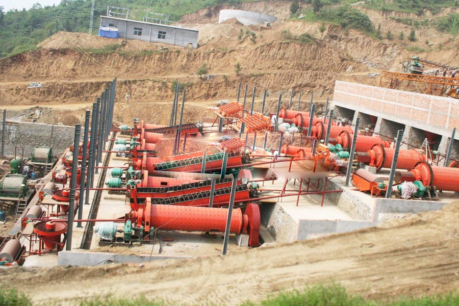

- Home >
- production line >
- beneficiation production line

Construction waste crushing production line

Mobile construction waste crushing station for urban construction waste crushing.
beneficiation production line
Mineral processing flowsheet
Three stage one closed circuit crushing and screening processes, ball mill, flotation and flotation grinding and dressing process of the combination of concentrate filtration and Flash drying products dehydration process. Also, using advanced DCS automatic control system, through the central control room, the concentration of these 3 processes form a network, realize the running state of equipment and process real-time dynamic collection, conditioning and control, production technology of automatically generated reports.

Crushing grinding process
Mineral processing equipment collocation of mineral processing technology of grinding grinding and classification by means of certain machinery and equipment make the mineral raw material particle size reduction and a certain particle size distribution characteristics of jobs. Usually will grain degrees reduced to 20-5mm of job called broken, corresponding of equipment for broken machine; again fine of crushed job is called mill mine, corresponding of equipment for mill mine machine; and broken machine and mill mine machine supporting control eventually products grain degrees distribution of job called grading, which and broken machine supporting of grading equipment General called screening machine, and mill machine supporting of dressing equipment grading equipment called grading machine.
Dressing production process
Mined ore primary crushing by Jaw Crusher first, after the crushing to a reasonable fineness via elevator, feeder evenly into the ball mill, ball mill to crush the ore, grinding. After the ball mill grinding ore fines into the next process: classification.
A, and graded mineral mixture after magnetic separation machines, due to the variety of mineral magnetic susceptibility of different through magnetic force and mechanical force separates magnetic substance in the mixture.
B, and graded mineral mixture after magnetic separation machines, mineral substances are separated through the mixing drum, because it contains a lot of water, subject to the preliminary concentrate thickener, dryer drying, drying minerals can be obtained.
Main equipment
| Production scale | 1000TPD | 500TPD | 200TPD |
| coarse crusher | PE600x900 | PE 400×600 | PE 400×600 |
| fine crusher | PE250x1200 | PE250x1000 | PE250x750 |
| ball mill | MQG2.2×7 | MQG1.83×7 | MQG1.5×5.7 |
| classifier | FJJ1.2×8.5 | FJJ0.75×5.5 | FJJ0.75×5.5 |
| magnetic separator | 1.2×2.4 0.9×1.8 | 7518(2) | 7518 |
| conveyor | 0.65×15(4) | 0.5x10m(4) | 0.5x10m(2) |
Working principle
Mining of ore first by e type broken machine for preliminary broken, in broken to reasonable fine degrees Hou through upgrade machine, and to mine machine uniform into mill, by mill on ore for crushed, and grinding. after mill grinding of ore fine material into Xia a process: grading. spiral grading machine with solid particles of share different and in liquid in the precipitation of speed different of principle, on ore mixture for wash NET, and grading. after wash NET and grading of mineral mixed material in after magnetic selected when, due to various mineral of than magnetization coefficient different, Through magnetic and mechanical force will mixed material in the of magnetic material separation from. after magnetic selected machine preliminary separation Hou of mineral particles in was into floating selected machine, according to different of mineral characteristics joined different of drug, makes by to of minerals and other material points left. in by to of minerals was separation out Hou, for its contains large water, must by concentrated machine of preliminary concentrated, again by drying machine drying, can get dry of minerals.
Leave Me A Message, Now
If you have any questions regarding equipment prices, production line configuration or other problems, you can send a message to us, we will contact you soon.